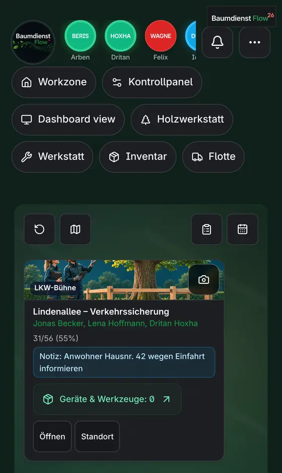
Workzone live
Kantieret e ditës me ekipin, progresin, shënimet dhe mjetet. Një prekje dhe hapet kantieri.
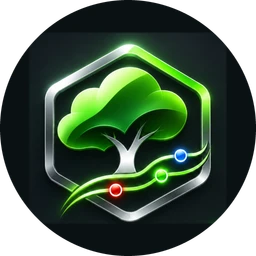
BaumdienstFlowHyrPër kujdesin e pemëve dhe shërbimet e pemëve
Zyra planifikon kantieret, ekipi punon me telefon, dhe të gjithë shohin të njëjtën gjendje, live. Nga atlasi i pemëve te flota, punishtja dhe druri në stok.
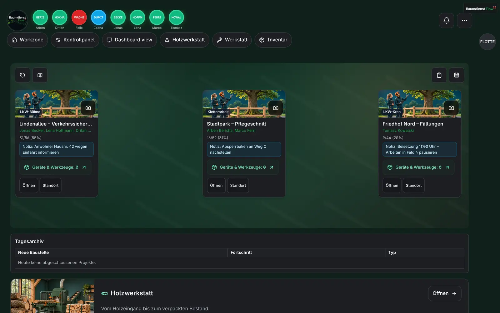
Proceset
Zyra punon në kompjuter, ekipi në telefon. Kështu duken proceset kryesore, me të dhëna shembull.

Kantieret e ditës me ekipin, progresin, shënimet dhe mjetet. Një prekje dhe hapet kantieri.
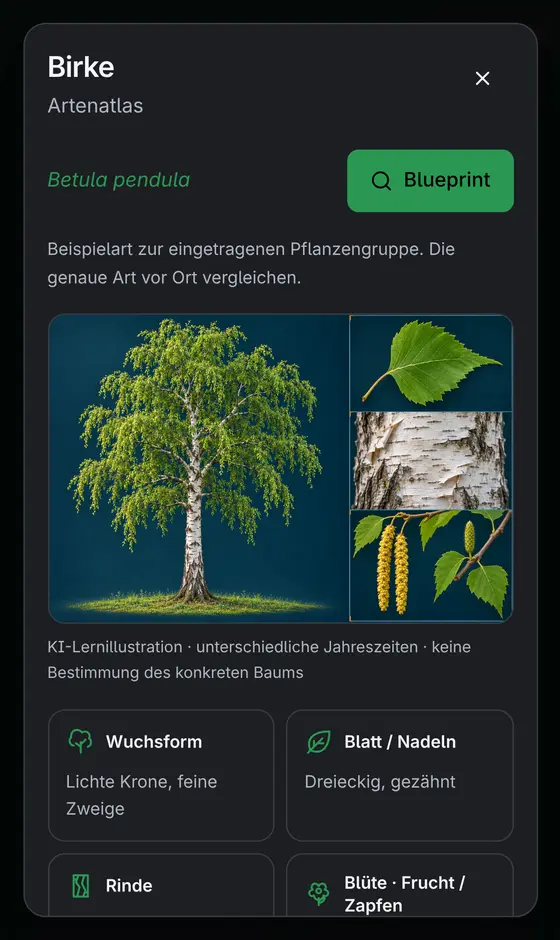
Çdo pemë ka kartën e vet. Atlasi tregon llojin me ilustrim: forma, gjethja, lëvorja, lulja.
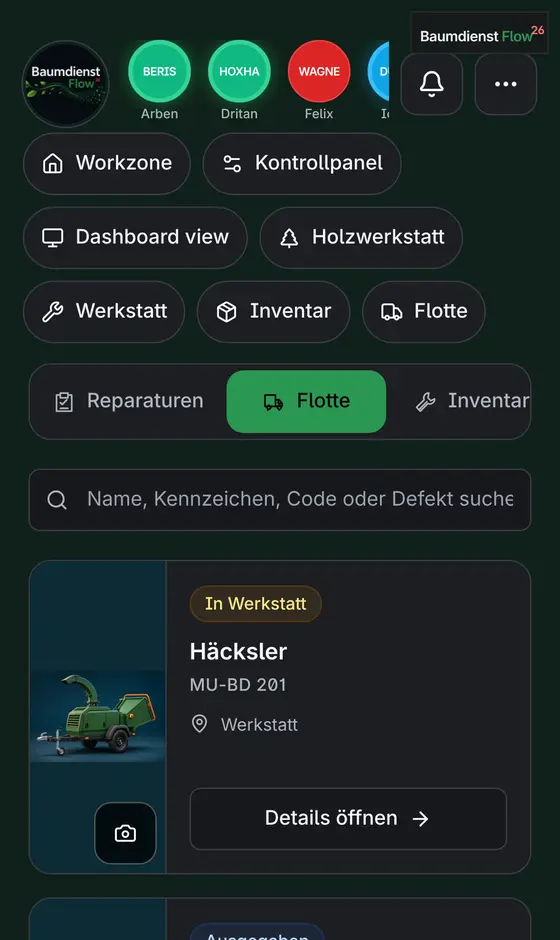
Çdo automjet me targë, foto, vend dhe status: në punë, në punishte apo i lirë. Afatet e kontrollit nuk harrohen.
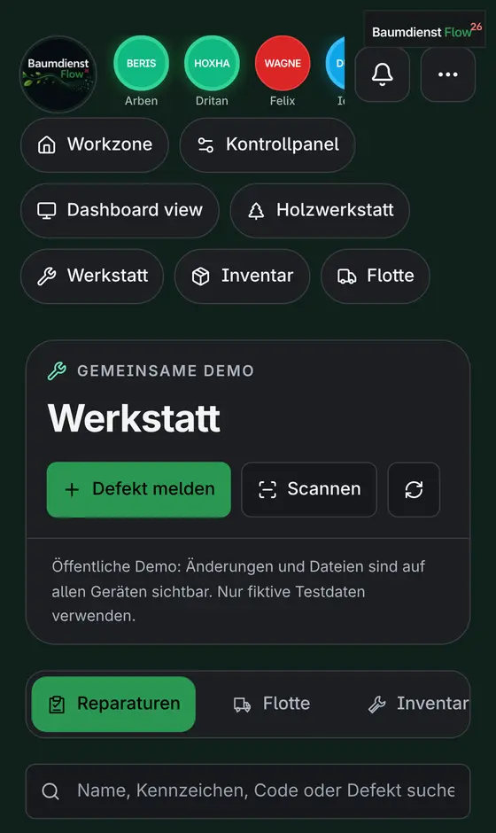
Defekti raportohet me foto ose skanim. Punishtja e merr, e riparon dhe e lëshon sërish, me histori.
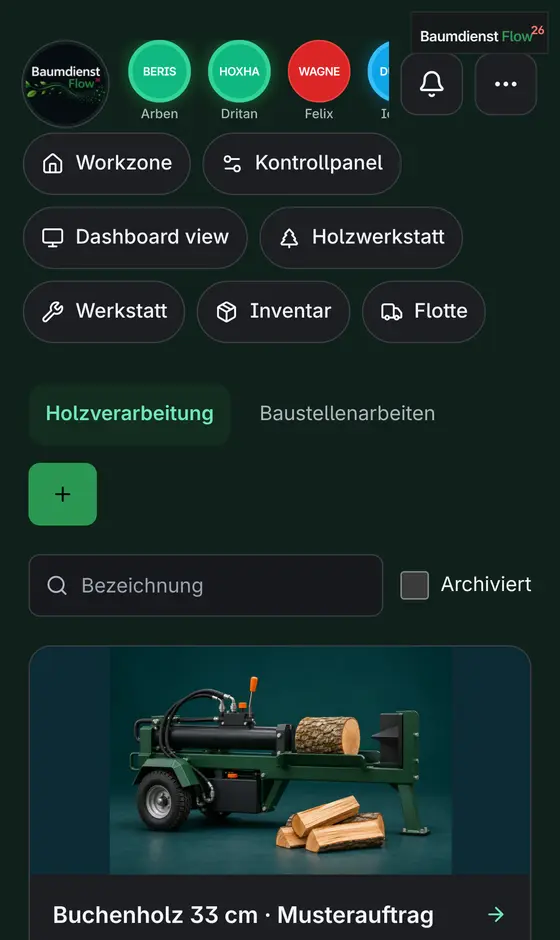
Nga druri që hyn te dru zjarri i paketuar: hyrja, prodhimi dhe stoku, me sasi dhe porosi.
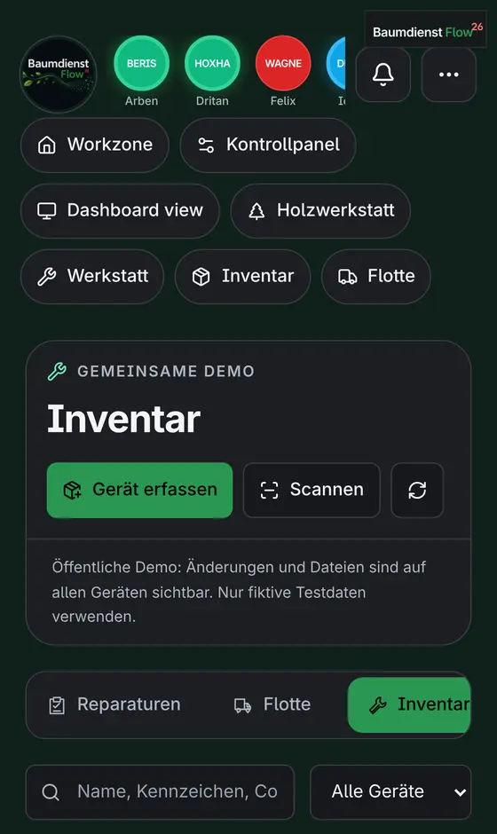
Sharra, makineri dhe vegla me kod. Një skanim tregon ku është, kush e ka dhe a është në rregull.
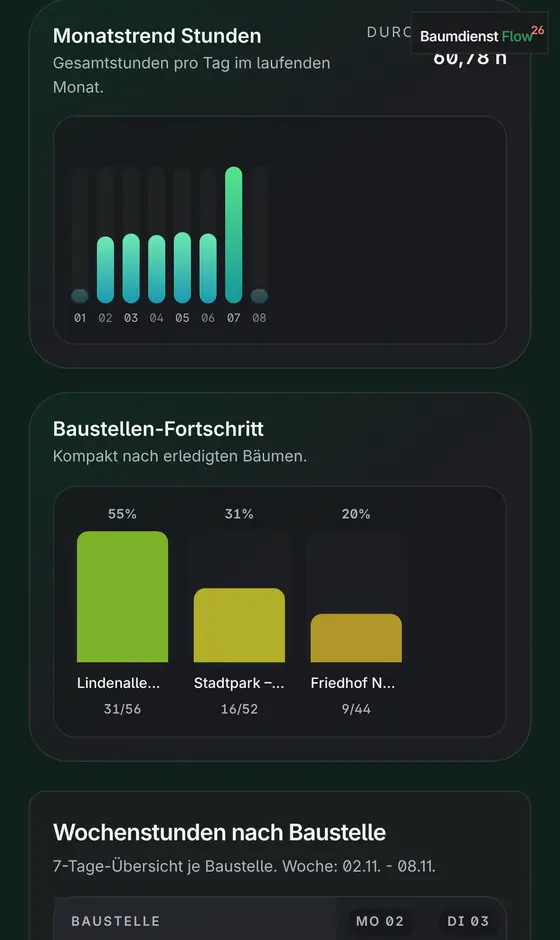
Orët e muajit, progresi i çdo kantieri dhe ekipi në grafika të qarta. Edhe në ekranin e madh të zyrës.
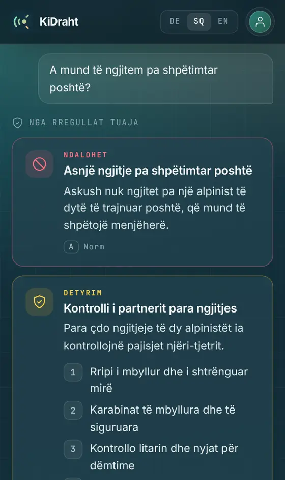
Pyet në gjuhën tënde. Përgjigjja vjen nga rregullat dhe manualet e firmës, me burim.
Në kompjuter
Çdo pemë ka kartën e vet me llojin nga atlasi. Ekipi e shënon direkt në punë, ndërsa zyra sheh kantieret, flotën, riparimet dhe drurin në stok.

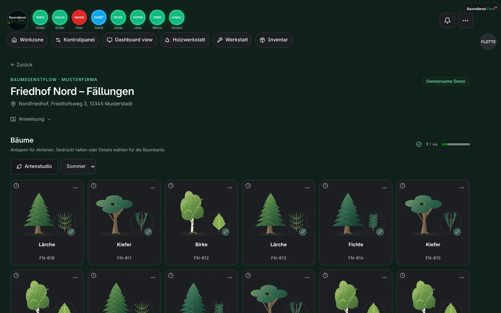
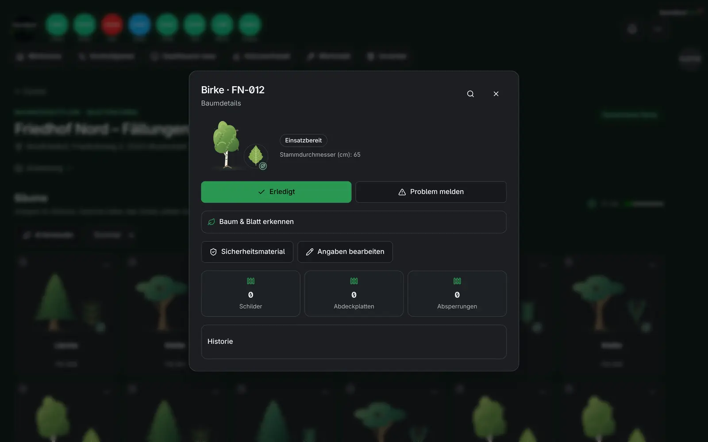
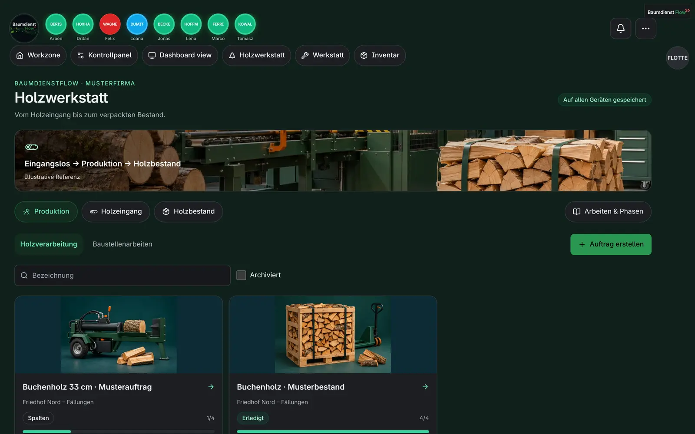
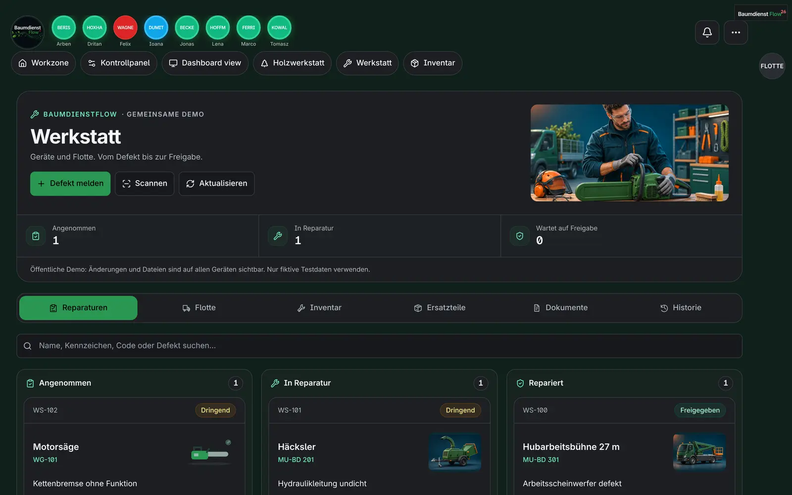
Në foto: firma shembull Baumdienst Musterstadt GmbH. Të gjithë personat dhe të dhënat janë fiktive.
Dashboard view
Dashboard view tregon ditën dhe muajin në grafika: kush punon, sa orë, sa ka përparuar çdo kantier. Mund të hapet edhe si ekran i madh në zyrë.
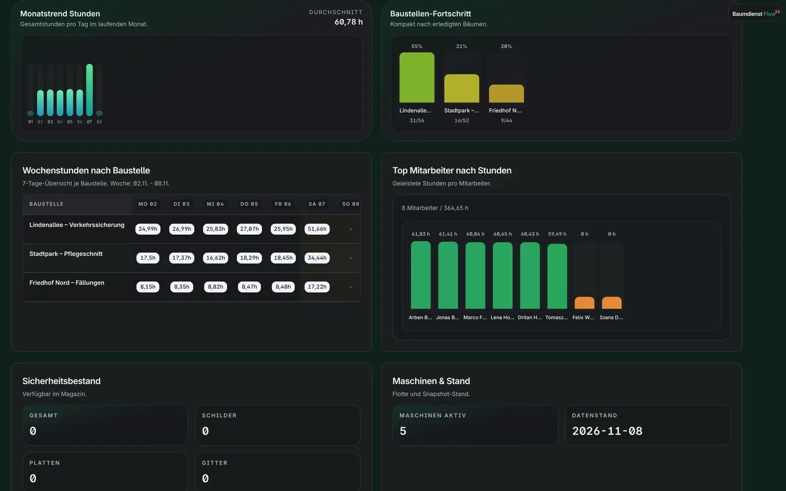
Rolet
Planifikim, personel, flotë dhe raporte. Hyrje me llogarinë e firmës.
Kontrollojnë pemët, sigurinë e kantierit dhe mjetet e ekipit.
PIN personal me 6 shifra. Nisin kohën, shënojnë pemët, dërgojnë foto, në gjuhën e tyre.
Si fillohet
Demo live ose prezantim i shkurtër me një firmë shembull.
Punëtorët, mjetet dhe kantieret importohen nga listat ekzistuese.
Çdo punëtor hyn me telefon. Zyra sheh gjithçka live që në ditën e parë.
Hyrja
Zyra hyn me llogarinë e firmës. Punëtorët hyjnë me PIN-in e tyre personal në telefon.
Mjete falas
Përveç platformës, ofrojmë mjete që i ndihmojnë ekipet çdo ditë. Të parat janë KiDraht dhe ArborTwin.
Biblioteka e dijes për punën në terren: libra të ilustruar, kurse bazë dhe teste për kujdesin e pemëve, ndërtimin dhe sigurinë. Përkthim me AI në gjuhën e punëtorit dhe një asistent që përgjigjet nga rregullat e firmës.
Hap bibliotekën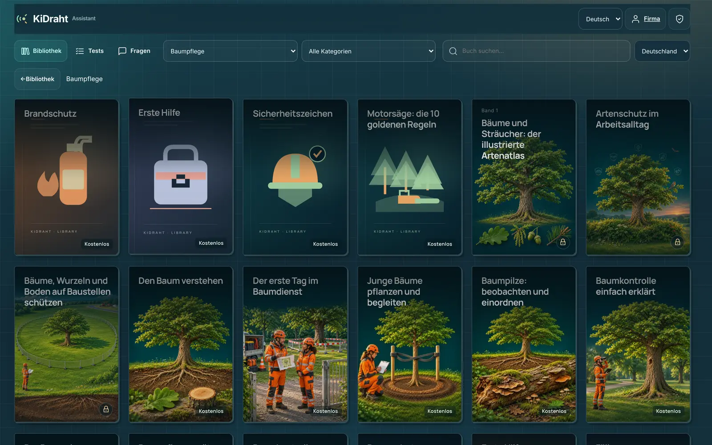

Binjaku dixhital i pemës. Nga foto te dokumentimi: AI ndihmon me matjet, specialisti i rishikon, të dhënat e erës vijnë nga DWD dhe raporti del si PDF. Hapet nga karta e pemës në BaumdienstFlow dhe si mjet në KiDraht.
Mjet ndihmës për dokumentim. Nuk zëvendëson kontrollin e sigurisë nga specialisti.
Më shumë mjete së shpejti